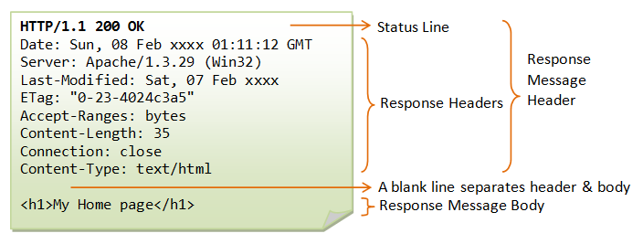

◾Status Line: CR/LF-terminated line containing 3 space-separated items, namely:
- HTTP Version: version of HTTP being used by the server
- Status Code: 3-digit integer code, indicating the result of the operation
- Reason Phrase: human-readable description of the operation result indicated by the status code
◾Message Headers: contains additional information about the response (same format as the message headers in the request message); in response messages, the types of message headers can be general headers, response headers, or entity headers
- Date: The Date general-header field represents the date and time at which the message was originated.
- Server: The Server response-header field contains information about the software used by the origin server to handle the request.
- Last-Modified: The Last-Modified entity-header field indicates the date and time at which the origin server believes the variant was last modified.
- ETag: The ETag response-header field provides the current value of the entity tag for the requested variant.
- Accept-Ranges: The Accept-Ranges response-header field allows the server to indicate its acceptance of range requests for a resource
- Content-Length: The Content-Length entity-header field indicates the size of the entity-body, in decimal number of OCTETs, sent to the recipient or, in the case of the HEAD method, the size of the entity-body that would have been sent had the request been a GET.
- Connection: The Connection general-header field allows the sender to specify options that are desired for that particular connection and MUST NOT be communicated by proxies over further connections.
- Content-Type: The Content-Type entity-header field indicates the media type of the entity-body sent to the recipient or, in the case of the HEAD method, the media type that would have been sent had the request been a GET.
◾Empty Line: CR/LF-terminated blank line by itself; this is required and serves to terminate the list of message headers in the request message
◾(optional) Message Body: the message body in response messages typically contains the web resource being requested
◾The picture below is an example of HTTP Response Message
